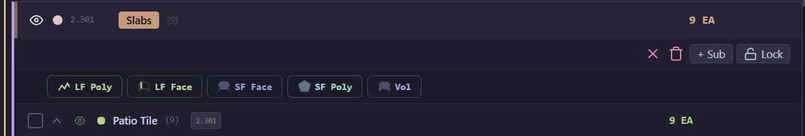
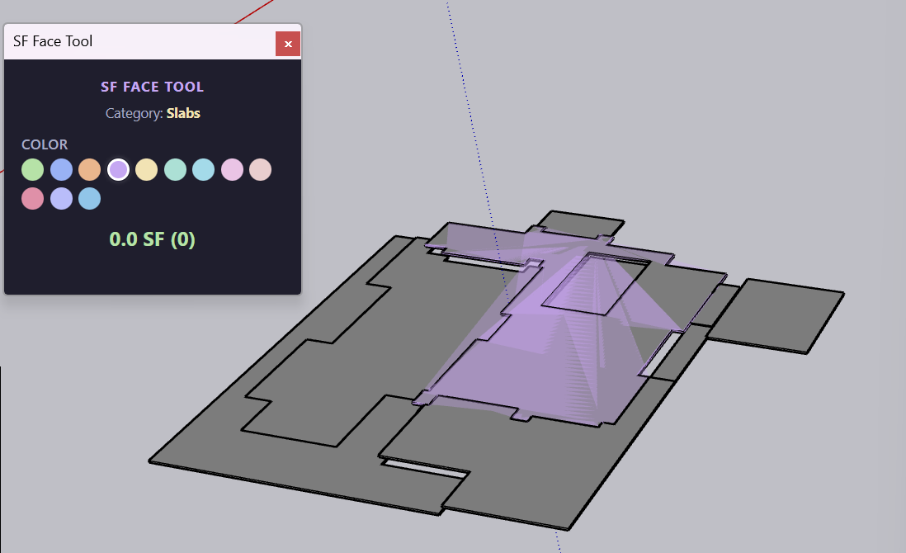
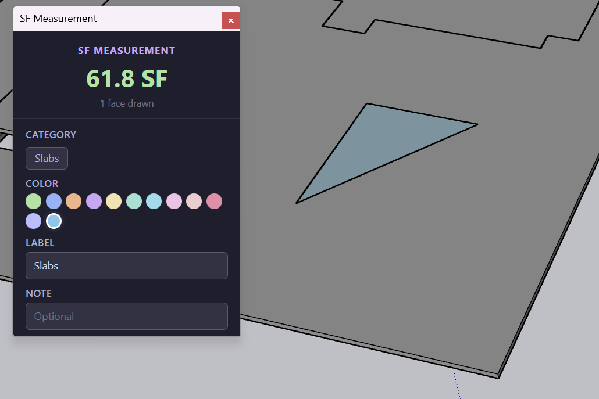
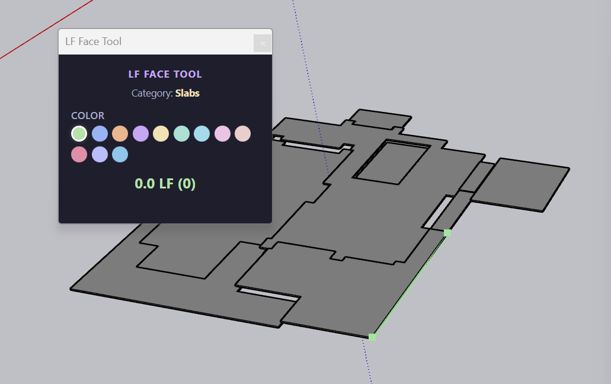
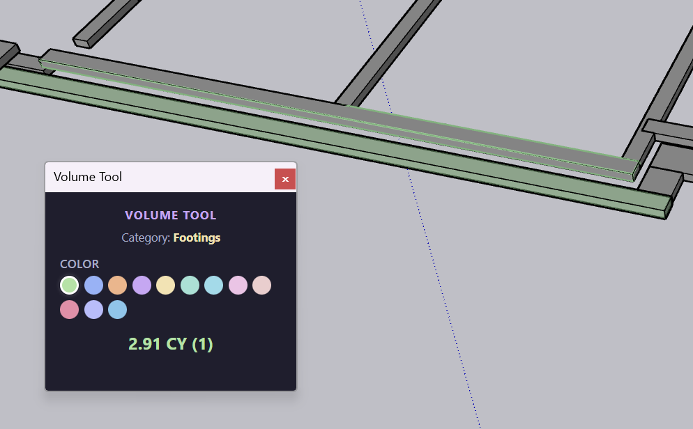
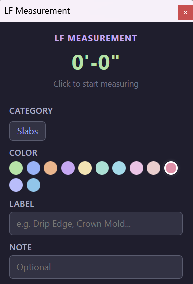
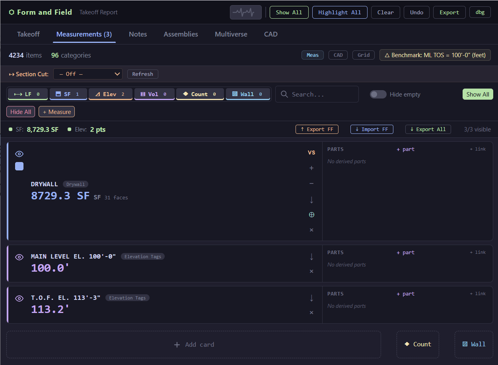
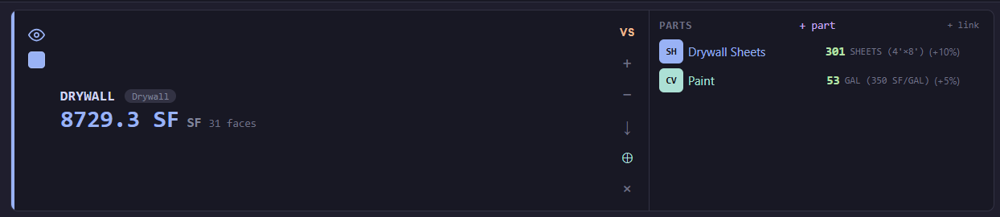
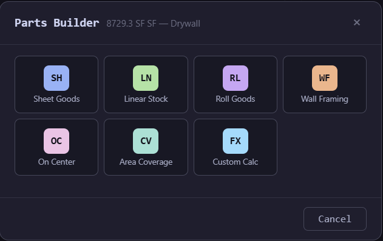
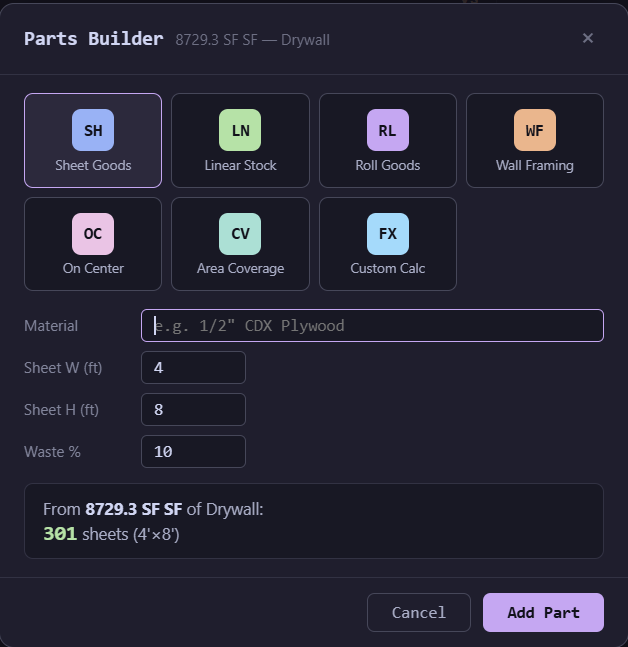

FF gives you five measurement tools and a parts system for turning raw quantities into material orders. Every measurement lives as a card in the Measurements tab.
Measurement tools are available in two places: from the tool buttons inside each expanded category in the Takeoff tab, or from the Measurements tab toolbar.
When you expand a category in the Takeoff tab, the toolbar shows five tool buttons:

The fastest way to measure area. Click any face in your model and FF instantly calculates the square footage. Handles irregular shapes, cutouts, and angled surfaces automatically — no tracing required.
Click additional faces to keep adding to the same measurement. The running total updates in the tool window.

For surfaces that don't have a clean face to click — or when you need to measure a region that spans multiple faces — use the SF Poly tool. Click points to draw an irregular shape and FF calculates the enclosed area.
The measurement window shows the running total, the assigned category, and lets you pick a color, set a label, and add a note.

Select a face and grab an edge to add its length to a linear measurement. Ideal for flat, segmented items like base trim, drip edge, fascia, and crown mold — anything where you need the linear footage along an edge.
The measurement can follow horizontal or vertical edges — press the arrow keys to switch orientation.

Click points in the model to draw a path. FF sums the total linear distance of all connected segments. Great for measuring runs that don't follow a single edge — like a gutter path around a roofline or conduit routes.
Right-click to start a new segment while keeping the measurement running. This lets you measure separate runs (e.g., each wall of a room) under one total.
Select solid objects and FF calculates volume in cubic yards (CY). Essential for concrete takeoffs — footings, slabs, stem walls, piers. Click multiple solids to add them to a running total.

When you activate any measurement tool, a floating window appears showing:
Category — which category this measurement belongs to
Color — pick from 13 colors to visually distinguish measurements in the model
Label — name your measurement (e.g., "Drip Edge", "Crown Mold")
Note — optional note for context
Running total — updates live as you click faces or draw segments

Two additional tools are available from the Measurements tab toolbar (bottom of the tab):
Create sequential counts for objects. Click items in the model to count them one-by-one, building a running tally. Each click increments the count and marks the object. Great for fixtures, outlets, or any item you need to count manually.
Calculates stud counts and plate counts based on wall height, length, and width. Input plate quantities, PT (pressure treated) plate options, and waste factor. Generates a complete framing material list from wall dimensions.
Every measurement you take appears as a card in the Measurements tab. Cards show the measurement name, category badge, value, and face/segment count. Filter by type using the chips at the top (LF, SF, Elev, Vol, Count, Wall).

Each card has action buttons on the right side:
+ and − — Add or subtract from the measurement value
↦ VS — Compare measurements with other cards or imported measurements from other FF users
↓ — Expand to see detailed breakdown
⊕ — Combine two cards: merge one measurement into another
× — Delete the measurement card
Every measurement card has a Parts panel on the right. Click + part to open the Parts Builder — or click + link to link another measurement card as a part of this one. For example, a LF drip edge measurement can be linked to your roofing card to keep everything organized in one place.

In this example, the 8,729 SF Drywall measurement has two derived parts: 301 sheets of 4'x8' drywall (with 10% waste) and 53 gallons of paint (at 350 SF/gal, 5% waste).
The Parts Builder gives you seven formula types for generating parts from your measurement:

SF to sheets (e.g., 4'x8' plywood, drywall)
LF to board count (e.g., 8' or 12' boards)
SF to rolls (e.g., house wrap, membrane)
Studs, plates, and headers from wall dims
Spacing-based counts (e.g., joists at 16" OC)
SF to coverage units (e.g., gallons of paint)
Write your own formula for anything the prebuilt types don't cover.
Each formula type has its own inputs. For example, Sheet Goods asks for material name, sheet width, sheet height, and waste percentage — then calculates the exact number of sheets needed:

The Measurements tab has three export/import buttons in the summary strip:
Export FF — Save your measurements as an FF file for backup or sharing between projects
Import FF — Load measurements from a saved FF file
Export All — Export the entire measurement report as CSV, including all cards, parts, and derived quantities. You can also export individual cards from the card's action menu.
Form and Field v11 — March 2026